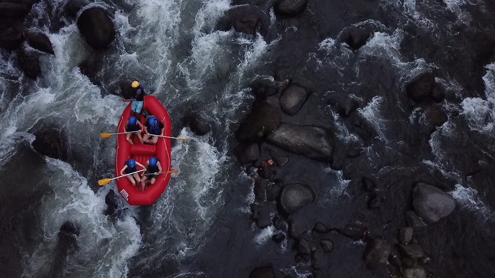

Our Mission: To provide safe, thrilling, and memorable white water rafting
adventures that connect people with nature and foster teamwork, courage, and joy.
Our Creed: We believe in respect for the river, care for our clients, and integrity
in every adventure. Our guides are committed to safety, professionalism, and creating positive
experiences for all.
Our Motto: "Ride the Rapids, Create Memories."



Wild Rapid Adventures
History
Wild Rapid Adventures was founded in 2010 by a group of passionate outdoor enthusiasts. Over the years, we have grown into one of the leading rafting companies, known for our commitment to safety, adventure, and customer satisfaction. Our team has guided thousands of happy clients through some of the most exciting rapids in the region.
Adventure Awaits You!